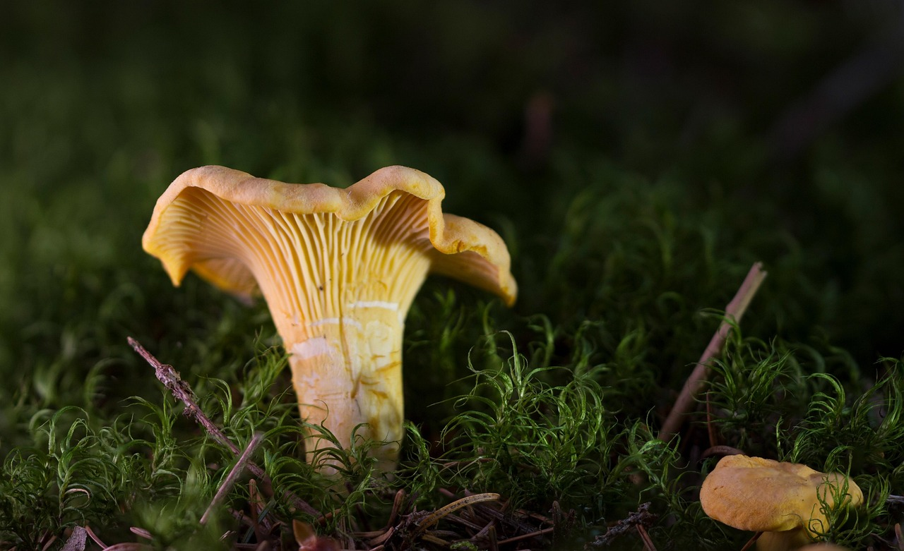
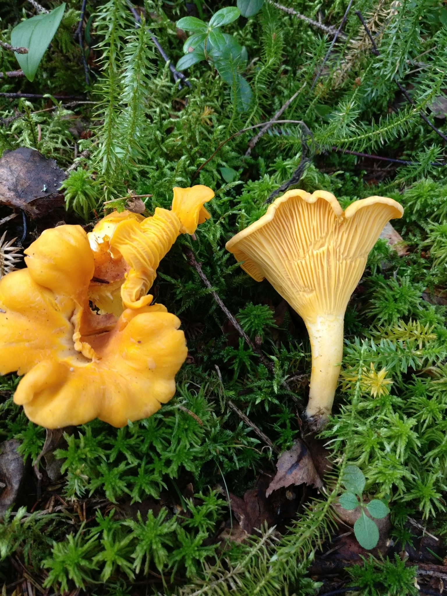
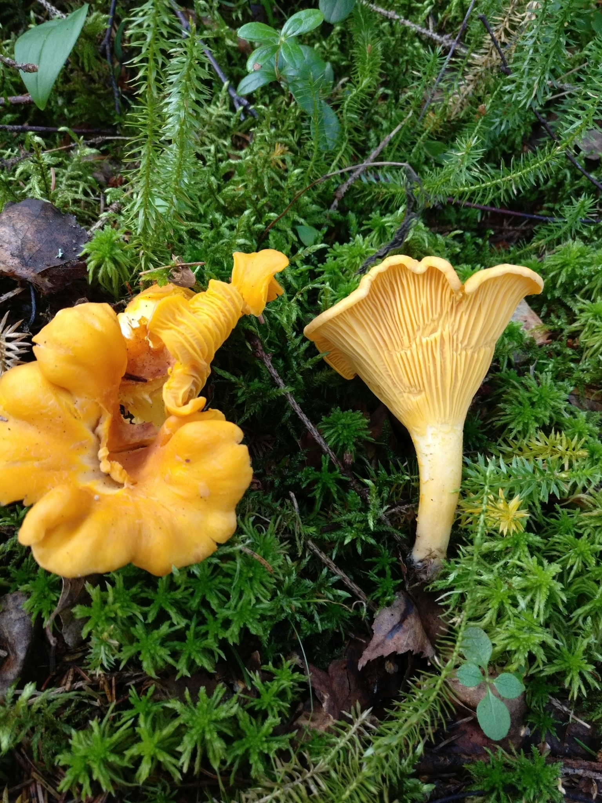
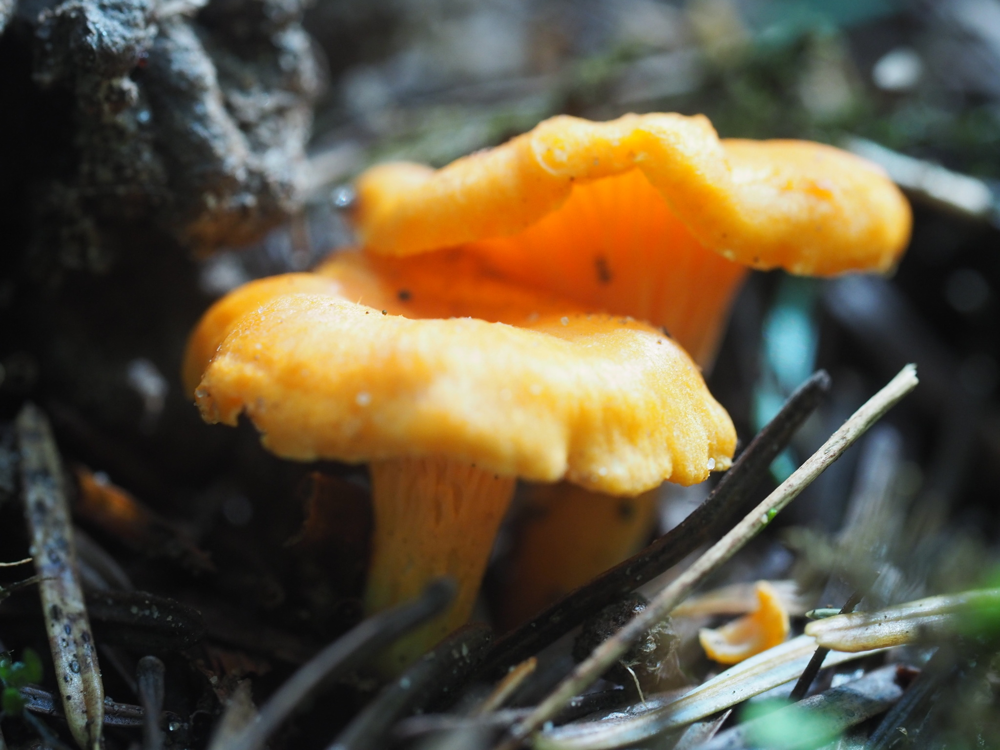
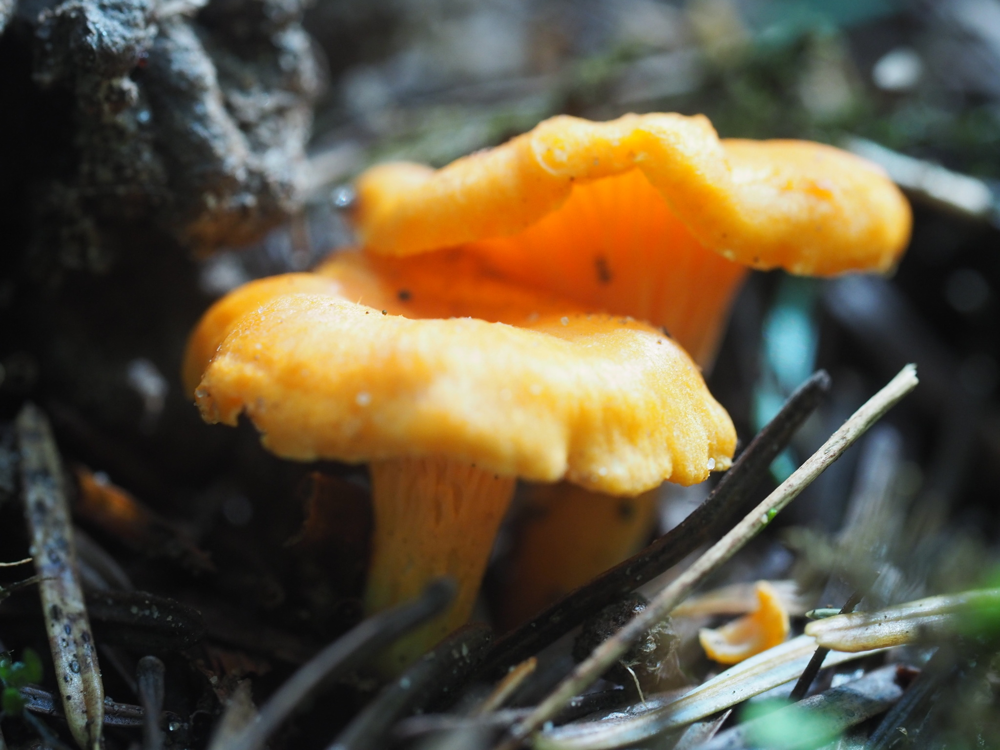
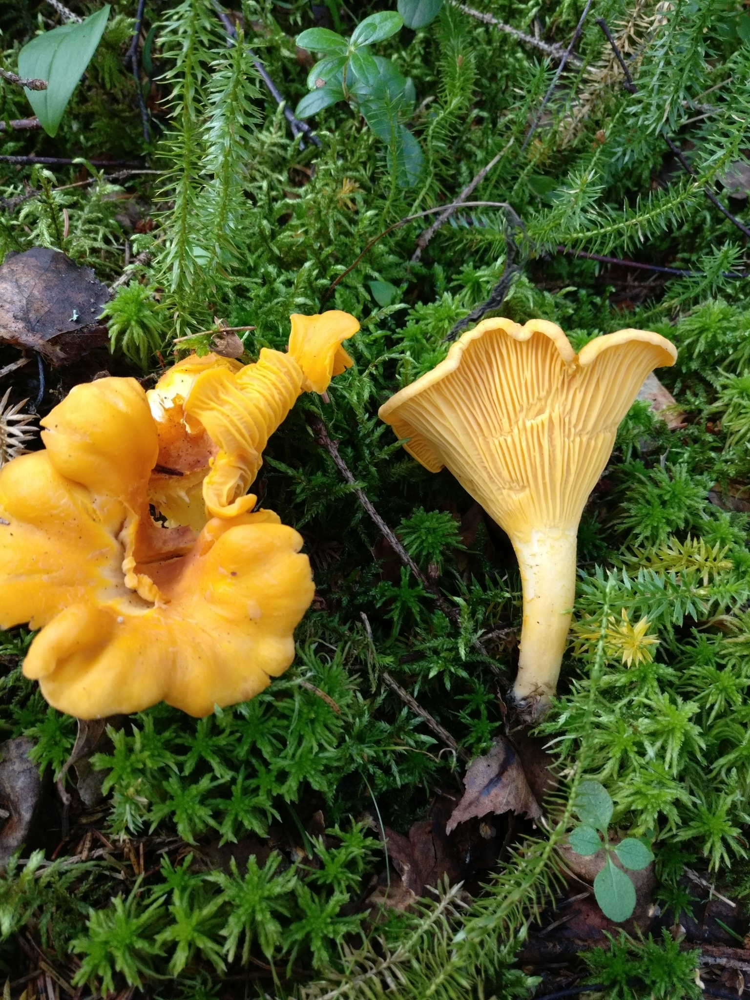
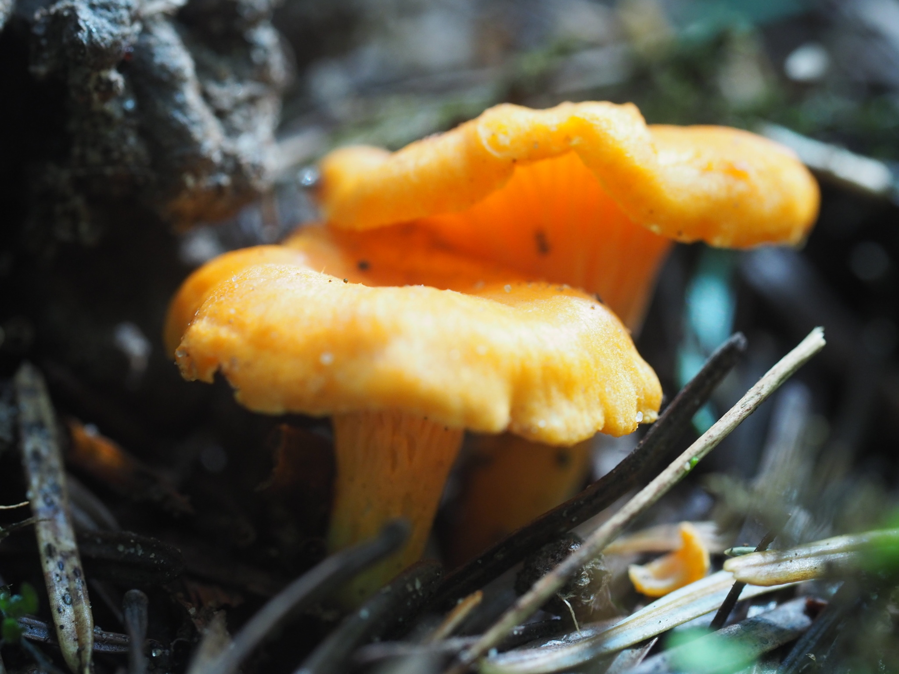
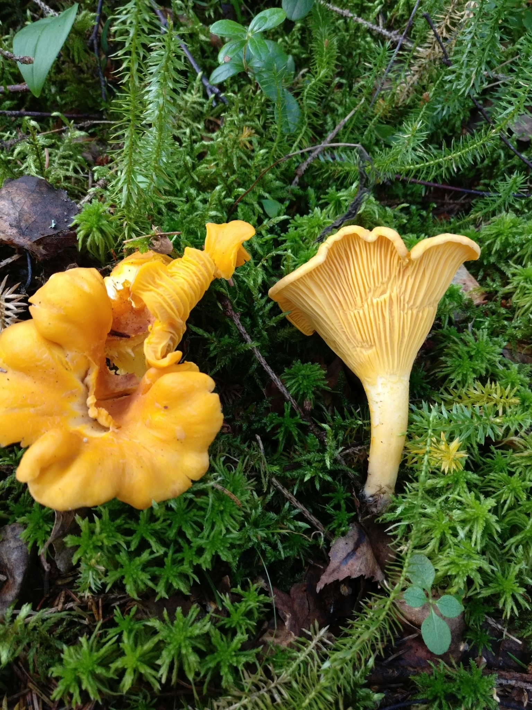
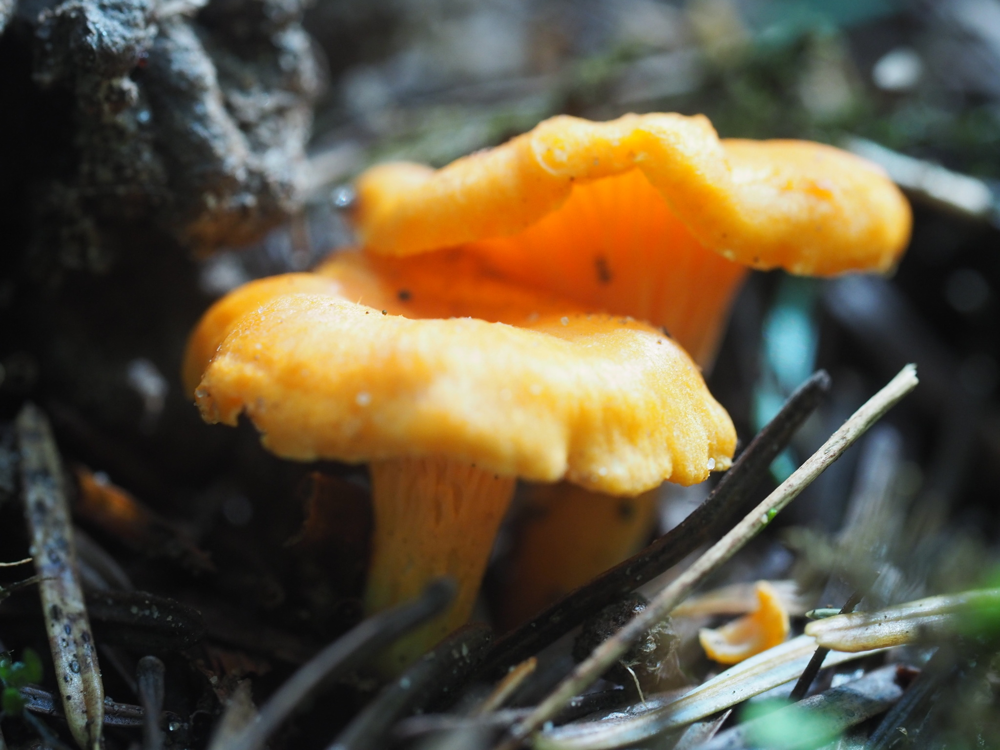

 

 



Pieprznik jadalny
Cantharellus cibarius
Jadalny


| Cecha | Opis |
|---|---|
| Kapelusz | 2 - 10cm, barwy żółtka, pomarańczowożółty, rzadziej białawy, młody guzikowaty, później wypukły z podwiniętym brzegiem, wreszcie rozpostarty, wklęsły; brzeg czesto jeszcze podgięty, falisty, gładki, matowy. |
| Listewki | Barwy kapelusza, dobrze wykształcone, grube, rozwidlone, daleko zbiegające. |
| Trzon | Barwy kapelusza, krótki, często wygięty, pełny, twardy, o podstawie zwężonej. |
| Miąższ | Biały do bladożółtego, zwarty, w trzonie włóknisty. Zpach owocowy, smak łagodny do ostrawego. |
| Zarodniki | 8 - 9 x 5 - 5,5µm, gładkie. Wysyp biały. |
Najczęściej pojawiają się od czerwca do listopada.

W lasach iglastych, liściastych i mszystych.
Różni się dobrze widocznymi blaszkami oraz ciemniejszą, pomarańczową barwą owocników.
Jego kapelusz pokryty jest filcowatymi, fioletowymi łuseczkami. Można go spotkać głównie w górach pod bukami.

Główną róźnicą między kielichowcem a pieprznikiem jadalnym jest fakt, iż kielichowiec pomarańczowy intensywnie świeci w ciemności. Światło wydzielane przez ten grzyb jest zielone.